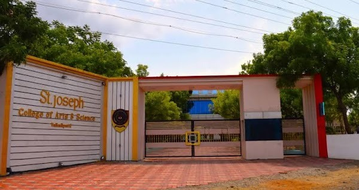

A self-financed co-educational citadel of learning run by the Roman Catholic Diocese of Palayamkottai, dedicated to academic elevation and character formation.
The Roman Catholic Diocese of Palayamkottai has been rendering exemplary and transformative service in the field of Education since 1973 under the Chairmanship of the Bishop of Palayamkottai.
St. Joseph College of Arts and Science was founded by Rt. Rev. A. Jude Paulraj on 13.06.2016, and blessed and inaugurated by Rev. Dr. A. Antony Pappusamy, the Apostolic Administrator of Palayamkottai Diocese. The college commenced formal operations in 2018 with the profound motto of:
“To know oneself and To know God”
The guiding compass of all academic and moral pursuits at SJCAS.Located at Vaikalipatti near Mettur and Kadayam in the picturesque Tenkasi District of Tamil Nadu, the college is affiliated to Manonmaniam Sundaranar University (MSU), Tirunelveli. Today, it stands proud as a growing center of excellence with a noble vision to serve and uplift the rural, poor, and downtrodden by giving them access to quality collegiate education.

The guiding principles underpinning our academic pedagogy, community engagement, and student development.
To be a center of higher academic learning that fosters intellectual curiosity, moral clarity, and professional capability among rural students, empowering them to become visionary agents of social and economic upliftment.
Echoing the motto “To know oneself and to know God”, St. Joseph College of Arts and Science, situated in the rural area of Vaikalipatti, is an admirable self-finance coeducation college run by the R.C. Diocese of Palayamkottai. Witnessing to human values and respect, the institution is always keen on forming the integral personality of the students.
God-fearing people will be treasured with wisdom, not just with knowledge. The knowledge received from studies and various programmes is transmuted to the higher gift of wisdom through which the youth of our college understand the importance of principles of life, the way to face the challenges they come across on the way, and find real joy in life. God-given gifts are to be utilized for the growth of society and the progress of each one in families.
The institution takes proactive steps to identify hidden talents and gives ample opportunity to grow through various co-curricular activities conducted both inside and outside the college. Though the institution experiences daily challenges and riddles, we, the staff and students, learn even from obstacles and thus develop courage to do better and to be the best.
We learn to walk together in hope. The journey includes parents, alumni, and well-wishers of our college. The way we have to go is long, but we join hands with one another. The management is delighted to serve the people of this region and participate in building the future of their lives.
Dear Parents, students, and well-wishers of the St. Joseph’s family, my prayerful greetings to you all. First and foremost, I express my sincere gratitude to each one of you for your constant support, love, and prayerful concern towards our College, which enables and encourages us to carry forward the mission of spreading value-based knowledge, wisdom, and education to one and all.
Education is a multistage process of building character, acquiring knowledge, and improving skills for lifelong learning to lead a happy, healthy, and peaceful life. Our college not only focuses on theoretical curriculum but nurtures overall student personality, extra-curricular activities, and an expansive perspective on life. The objective of higher education in rural areas is closely associated with gainful employment, positive attitude, and analytical thinking to constructively contribute to society.
The inspiration and commitment of our management to continuous improvement, coupled with the hard work of our faculty members towards the holistic development of our students, ensures that every graduate will taste success in any sphere of life they choose. I warmly invite you to be part of this enriching journey.
Eminent ecclesiastical leaders, seasoned educationists, senior faculty, and university representatives directing the institutional mission.
Bishop of R.C. Diocese of Palayamkottai
St. Joseph College of Arts and Science
Palayamkottai Diocese
Palayamkottai Diocese
Palayamkottai Diocese
St. Joseph College of Arts & Science
Eminent Academician
Senior Educational Consultant
Transparent administrative structure ensuring participatory governance and operational excellence.